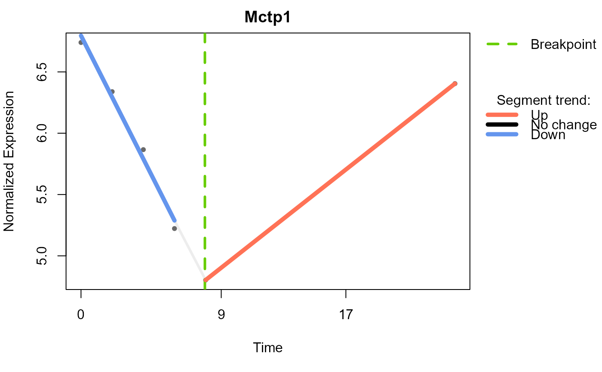
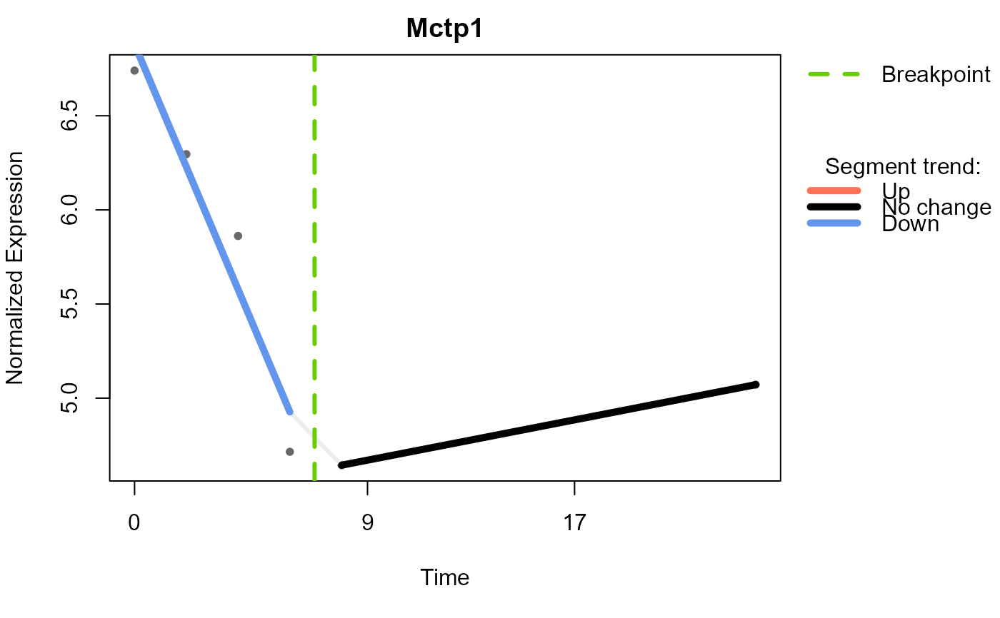
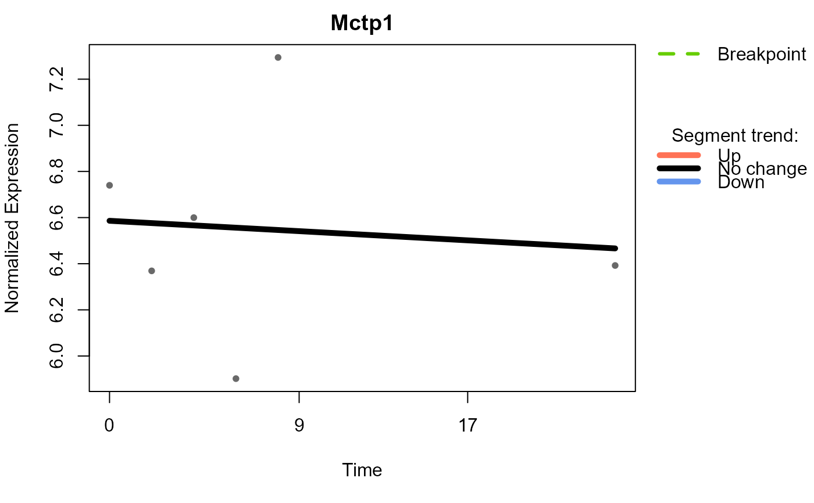
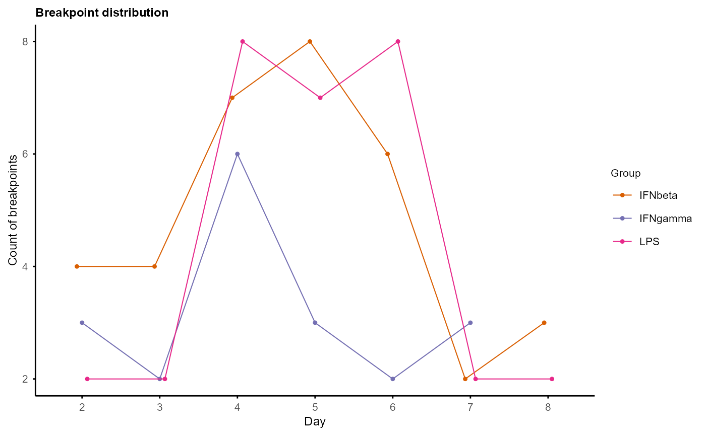

Summarise Trendy results into data frame
Arguments
- res_list
A list of Trendy analysis results, output of
run_Trendy()- ...
Additional arguments to be passed to the
Trendy::topTrendy()
Value
A data frame of summary results of Trendy, including breakpoints, segment slopes and p-values for each fitted feature in each group. A "Pattern" column is added to show the combination of segment trends (up, down, stable) for each feature.
Examples
data("example")
example_obj <- normalise_to_start(example_obj)
example_obj_list <- split_groups(example_obj)
example_obj_merged_list <- merge_replicates(example_obj_list)
example_obj_merged_list <-
calc_feature_property(example_obj_merged_list, threshold = 0)
# no missing value in the example dataset, so imputation is not necessary
example_obj_merged_imp_list <- impute_groups(example_obj_merged_list)
# "untreated" group has only 3 time points, so Trendy analysis will not be
# performed for this group
# example_res_list <- run_Trendy(example_obj_merged_imp_list, maxK = 1,
# minNumInSeg = 2, meanCut = 0)
data("example_res_list")
plot_segments(example_obj_merged_imp_list, example_res_list,
feature = c("Mctp1"))
#> Plotting segmented regression for group: IFNbeta

#> Plotting segmented regression for group: IFNgamma

#> Plotting segmented regression for group: LPS

plot_breakpoints(example_res_list)
#> Warning: number of columns of result is not a multiple of vector length (arg 9)
#> Warning: number of columns of result is not a multiple of vector length (arg 3)
#> Warning: number of columns of result is not a multiple of vector length (arg 5)

trendy_summary <- summarise_Trendy(example_res_list)
#> Warning: number of columns of result is not a multiple of vector length (arg 9)
#> Warning: number of columns of result is not a multiple of vector length (arg 3)
#> Warning: number of columns of result is not a multiple of vector length (arg 5)
trendy_list <- extract_segment_trends(trendy_summary)